ИИ-навигатор — проба
Короткий старт: маршрут по методу Марины после бесплатного теста.
990 ₽ / 5 500 ₸Записаться
Начните бесплатно, сделайте первый живой шаг за 1 000–1 500 ₽ и идите так глубоко, как нужно. Все сессии — онлайн, вживую, группы до 8 человек.
Оптимально 5. Каждый работает со своим запросом, а не слушает лекцию.
Распознавание → углубление → разворот в ресурс. В конце — конкретные шаги на 24 часа.
Индивидуальная сессия у Марины — 10 000 ₽. Тренинг даёт сопоставимую глубину за 5 000 ₽.
Тест и ограниченный диалог — бесплатно. Онлайн-оплата пока не подключена: Марина пришлёт реквизиты в Telegram. Это не медицинская услуга.
Короткий старт: маршрут по методу Марины после бесплатного теста.
Ежедневный маршрут и диалоги с навигатором.
Выгоднее месяца, если готовы идти регулярно.
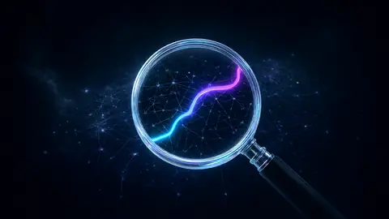
2:061 на 1 · 30 минутПонять, что стоит за вашей ситуацией и какой шаг нужен дальше. Засчитывается в покупку.
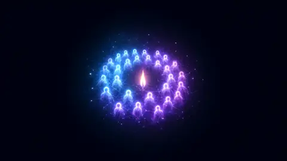
2:03Подписка · Telegram · предзаписьМедитации по понедельникам, групповые «Разборы», карта недели.
 2:16Т-игра · 4 часа · до 4 игроков
2:16Т-игра · 4 часа · до 4 игроковАвторская версия для бизнеса и жизненных ситуаций.
Смотреть могут многие, активно играют 5–6 участников — каждый уходит с лёгким разворотом.
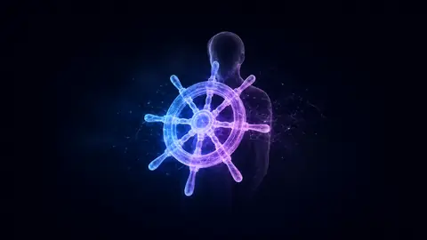
1:51Мини-тренинг · 1–1,5 чВнутренний самозванец часто управляет твоими решениями?
«Я хочу большего. Но почему-то не иду туда, где это большее меня ждёт».
Много делаешь, но деньги словно проходят мимо?
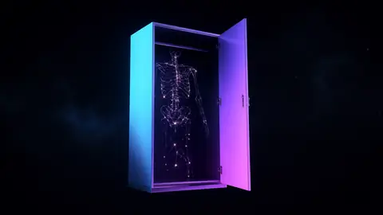
2:42Мини-тренинг · 1–1,5 чВнешне всё стабильно, а внутри — фон тревоги и ожидание «чего-то плохого»?
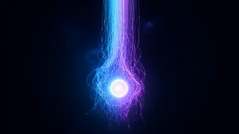
2:02Мини-тренинг · 1–1,5 чТы тоже всё контролируешь? И даже чувства у тебя — по расписанию?
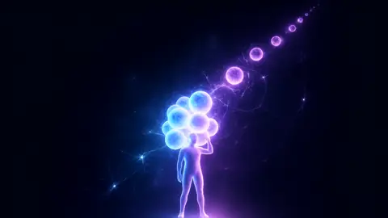
2:04Мини-тренинг · 1–1,5 чУспеть за всех, подстраховать, доделать, помочь, проконтролировать — а внутри тяжесть и усталость?
Почему с одними и теми же людьми вы снова и снова заходите в тупик?
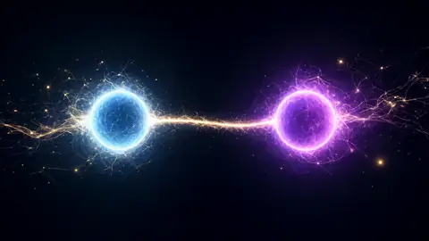
2:06Мини-тренинг · 1–1,5 чХочешь быть услышанным и понятым, а получается наоборот?
 2:14Трансформационный тренинг · 2–3 ч
2:14Трансформационный тренинг · 2–3 чУвидеть свои скрытые денежные барьеры и стратегию роста дохода.
Ваши деньги, ваши правила: освободитесь от финансовых сценариев детства.
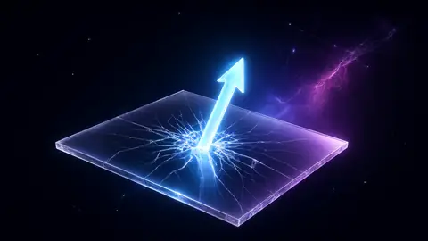
2:14Трансформационный тренинг · 2–3 чУвидеть сумму, на которой вы «застряли», и план выхода на новый уровень.
Ваша финансовая жизнь зависит от ваших стратегий. Но что, если они работают против вас?
А что будет, когда все узнают, что я не так хорош, как кажется? Имею ли я право заявить о своих компетенциях?
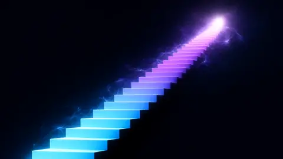
2:36Трансформационный тренинг · 2–3 чЕсть цель, есть план, вложены силы, время, ресурсы… но ты всё ещё не там! А что, если на пути стоит страх успеха?
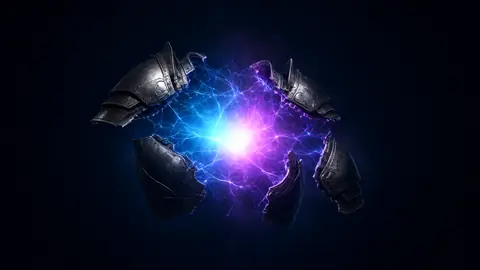
2:35Трансформационный тренинг · 2–3 чА что меня не пускает к моей финансовой цели?
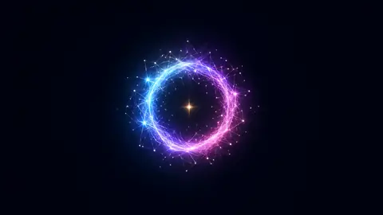
2:06Трансформационный тренинг · 2–3 чНеужели жизнь — всего лишь затяжной прыжок из утробы в неизвестность?! Раз так, пусть он будет самым прекрасным полётом, наполненным счастьем!
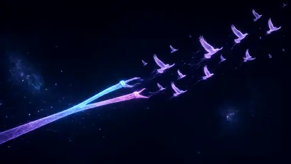
2:21Трансформационный тренинг · 2–3 чКак отпустить натянутые вожжи и начать расти.
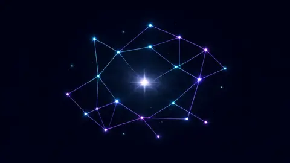
2:41Трансформационный тренинг · 2–3 чДля руководителей, которые хотят, чтобы команда росла и достигала целей без постоянной подстраховки: мотивации, пинков, кнутов и пряников.
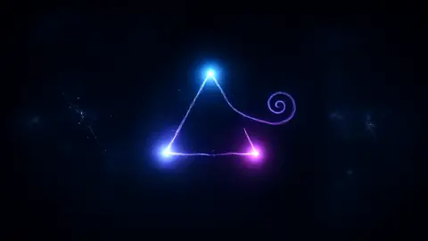
2:22Трансформационный тренинг · 2–3 чБизнес и команда: выход из круговорота конфликтов. Вместо борьбы, жертвенности или обвинений — осознанный выбор, как действовать.
С одними людьми всё складывается легко, а с другими — будто на минном поле. А что, если конфликт — не враг, а дверь в развитие?
 2:02Трансформационный тренинг · 2–3 ч
2:02Трансформационный тренинг · 2–3 чА что, если проявляться так же естественно и гармонично, как дышать? Почему же ты себя тормозишь?
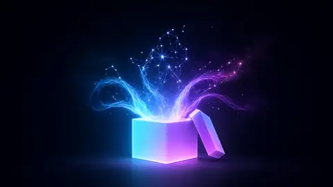
2:26Трансформационный тренинг · 2–3 чХочешь продавать что-то другим? Сначала продай это себе! А ты продал себе свой продукт?
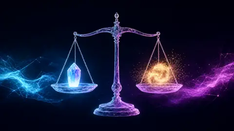
2:39Трансформационный тренинг · 2–3 чЕсли вы никак не определитесь со стоимостью своей услуги или продукта и это тормозит продвижение, останавливает продажи и приводит к выгоранию — этот тренинг для вас!
 2:14Трансформационный тренинг · 2–3 ч
2:14Трансформационный тренинг · 2–3 чКак называть цену на свои услуги или продукт, не чувствуя себя грабителем или просителем?
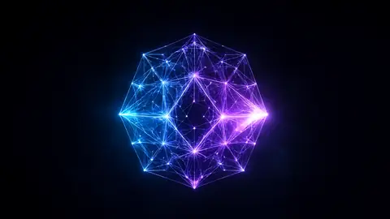
2:23Трансформационный тренинг · 2–3 чКак научиться видеть в перфекционизме верного друга и помощника и перестать обвинять его в своих проблемах?
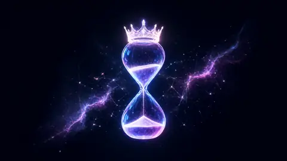
1:59Трансформационный тренинг · 2–3 чЭто просто лень — или корень проблемы гораздо глубже?
Кто они — и кто я?!
Как я хочу действовать — и как действую по факту? Все ли средства для меня хороши?
Мечта живёт в самом сердце и греет душу. Какие-то мечты мы готовы воплотить, но есть та самая — заветная. На тренинге прикоснёмся именно к ней.
Сколько планов ты кладёшь «на полочку» из-за отсутствия идеальных условий? Пора выстроить мостик к мечте и начать действовать сейчас — с тем, что уже есть!
 2:22Трансформационный тренинг · 2–3 ч
2:22Трансформационный тренинг · 2–3 чКогда мечта превращается в цель, она становится путеводной звездой. Но что, если маршрут ведёт не туда, куда ты действительно хочешь? Проверим, соответствует ли цель твоим ценностям и мечтам — или навязана извне.
 2:21Трансформационный тренинг · 2–3 ч
2:21Трансформационный тренинг · 2–3 чПрактический тренинг для тех, кто хочет превратить амбиции в реальность.
«Всем-всем-всем я помогу, по-другому не могу! Мне в ответ не много надо: лишь признание, похвалу!»
Модуль выгоднее, чем 4 тренинга по отдельности.
Деньги — сложная система представлений, убеждений, ценностных ориентиров и принимаемых в соответствии с ними решений и действий. Поэтому работать с…
Синдром самозванца, страх успеха, финансовый страх и базовый страх — четыре «тормоза», которые забирают энергию у ваших целей. За месяц вы пройдёте…
Гиперконтроль, «нянька» вместо лидера, манипуляции и повторяющиеся конфликты — замкнутые круги, в которых теряются силы, деньги и отношения. Модуль…
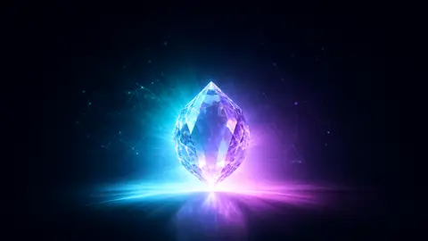
2:21Модуль · 1 месяц · 4 тренингаКак заявить о себе и своей ценности: проявляться легко, «продать» свой продукт сначала себе, определить стоимость услуги и спокойно называть…
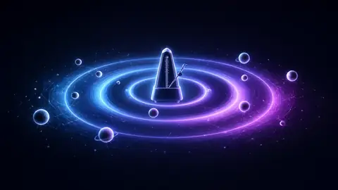
2:33Модуль · 1 месяц · 4 тренингаПерфекционизм, прокрастинация, самооценка и баланс мужского и женского — то, что определяет ваш темп. Модуль помогает успевать важное без стресса и…
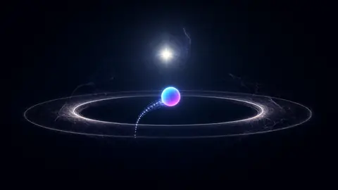
2:05Модуль · 1 месяц · 4 тренингаОт мечты — к проверенной цели и конкретным шагам. Модуль соединяет вдохновение и системные действия, чтобы цель вела вас, а не…
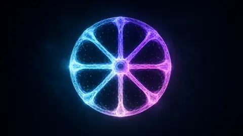
2:113 месяца · модули 1–3Деньги, страхи, выход из замкнутого круга. 12 тренингов.
6 модулей, 24 живых тренинга: от денег и страхов до проявленности и масштаба.
Продукт и цена, ритм без стресса, от мечты к цели. 12 тренингов.
Разбор системы мышления как архитектуры и её перенастройка.
7 000 ₽ за сессию.
7 000 ₽ за сессию — для продолжительной работы.
Для тех, кто уже был у Марины на сессии.
8 шагов и 3 живых эфира, чтобы сдвинуться с мёртвой точки.
5 недель мягкой трансформации в поддерживающем кругу.
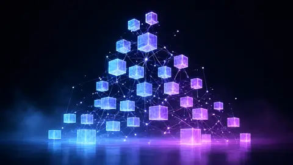
2:04Для психологов · 1–2 месяцаСоздать свою трансформационную игру или программу.
Стоимость: · Ближайшая дата:
Напишите Марине — она пришлёт детали для оплаты.
Текст сообщения (подставится в Telegram и скопируется):
Все сессии проходят онлайн и вживую — с Мариной Степановой. Группы до 8 человек.
Бесплатный тест: 8 ситуаций → персональный разбор и следующий шаг.
Пройти тест